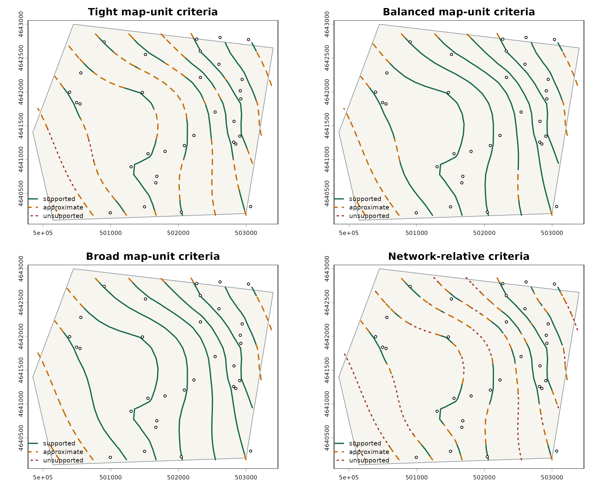

Comparing contour-support thresholds
contour-support-thresholds.Rmdps_contour_support() divides modeled contour lines
according to user-defined spatial-support criteria. This example applies
four sets of criteria to the same synthetic TPS surface and one-unit
contours. The contour locations do not move; only the locations at which
their support class changes are different.
These classes describe local observation support. They do not prove that a solid contour is correct, prove that a distant contour is wrong, or constitute statistical confidence intervals. Every section remains an interpolation from the modeled surface.
Build one surface and support grid
data("synthetic_wells")
points <- ps_make_points(
synthetic_wells,
x = "x", y = "y", value = "gw_elevation", name_col = "well_id",
crs = "EPSG:26916"
)
aoi <- ps_sample_aoi()
surface <- suppressWarnings(ps_interpolate(
points, methods = "TPS", grid_res = 150, mask = aoi, padding = 0
)$TPS)
contours <- ps_contours(surface, interval = 1)
support <- ps_prediction_support(points, surface = surface)
data.frame(
observations = nrow(points),
contour_features = nrow(contours),
grid_resolution_m = res(surface)[1]
)
#> observations contour_features grid_resolution_m
#> 1 32 10 150Apply four threshold choices
The first three scenarios use projected map units. The fourth expresses its criteria as multiples of the network’s median nearest-neighbor spacing.
criteria <- data.frame(
scenario = c(
"Tight map-unit criteria",
"Balanced map-unit criteria",
"Broad map-unit criteria",
"Network-relative criteria"
),
distance_reference = c(
"map_units", "map_units", "map_units",
"median_nearest_neighbor"
),
supported_distance = c(250, 500, 900, 0.75),
approximate_distance = c(600, 1200, 1800, 1.5),
stringsAsFactors = FALSE
)
classified <- lapply(seq_len(nrow(criteria)), function(i) {
suppressWarnings(ps_contour_support(
contours = contours,
support = support,
supported_distance = criteria$supported_distance[i],
approximate_distance = criteria$approximate_distance[i],
distance_reference = criteria$distance_reference[i],
require_inside_hull = TRUE
))
})
names(classified) <- criteria$scenario
threshold_table <- data.frame(
scenario = criteria$scenario,
reference = criteria$distance_reference,
supported_supplied = criteria$supported_distance,
approximate_supplied = criteria$approximate_distance,
supported_actual_m = vapply(
classified,
function(x) x$thresholds$supported_distance_actual,
numeric(1)
),
approximate_actual_m = vapply(
classified,
function(x) x$thresholds$approximate_distance_actual,
numeric(1)
)
)
knitr::kable(threshold_table, digits = 1)| scenario | reference | supported_supplied | approximate_supplied | supported_actual_m | approximate_actual_m | |
|---|---|---|---|---|---|---|
| Tight map-unit criteria | Tight map-unit criteria | map_units | 250.0 | 600.0 | 250.0 | 600 |
| Balanced map-unit criteria | Balanced map-unit criteria | map_units | 500.0 | 1200.0 | 500.0 | 1200 |
| Broad map-unit criteria | Broad map-unit criteria | map_units | 900.0 | 1800.0 | 900.0 | 1800 |
| Network-relative criteria | Network-relative criteria | median_nearest_neighbor | 0.8 | 1.5 | 183.5 | 367 |
The relative scenario records both the supplied multipliers and the actual calculated map distances. No universal threshold is selected silently.
support_colors <- c(
supported = "#176b4d",
approximate = "#c56a00",
unsupported = "#a33a2b"
)
support_lty <- c(supported = 1, approximate = 2, unsupported = 3)
old_par <- par(mfrow = c(2, 2), bg = "white", mar = c(3, 3, 3, 1))
for (scenario in names(classified)) {
x <- classified[[scenario]]
terra::plot(
aoi, col = "#f7f5ef", border = "#8b969c", lwd = 1,
main = scenario
)
segment_values <- terra::values(x$segments)
for (support_class in names(support_lty)) {
keep <- segment_values$support_class == support_class
if (!any(keep)) next
terra::plot(
x$segments[keep], add = TRUE,
col = support_colors[support_class],
lty = support_lty[support_class], lwd = 2
)
}
terra::plot(points, add = TRUE, pch = 21, bg = "white", cex = 0.65)
legend(
"bottomleft", names(support_lty),
col = support_colors, lty = support_lty, lwd = 2,
bty = "n", cex = 0.75
)
}
par(old_par)
length_summary <- do.call(rbind, lapply(names(classified), function(scenario) {
values <- terra::values(classified[[scenario]]$segments)
totals <- aggregate(segment_length ~ support_class, values, sum)
data.frame(
scenario = scenario,
support_class = totals$support_class,
total_length_km = totals$segment_length / 1000
)
}))
knitr::kable(length_summary, digits = 2)| scenario | support_class | total_length_km |
|---|---|---|
| Tight map-unit criteria | approximate | 9.97 |
| Tight map-unit criteria | supported | 10.41 |
| Tight map-unit criteria | unsupported | 1.64 |
| Balanced map-unit criteria | approximate | 4.99 |
| Balanced map-unit criteria | supported | 17.03 |
| Broad map-unit criteria | approximate | 4.21 |
| Broad map-unit criteria | supported | 17.82 |
| Network-relative criteria | approximate | 7.61 |
| Network-relative criteria | supported | 8.02 |
| Network-relative criteria | unsupported | 6.39 |
Tighter criteria classify more line length as approximate or unsupported; broader criteria classify more as supported. That is a consequence of the chosen mapping rules, not evidence that one scenario is universally correct. Appropriate thresholds depend on monitoring-network geometry, hydrogeologic setting, interpolation method, raster resolution, and intended map use.
The training convex hull is used here only as a geometric support
indicator. It is not an aquifer boundary. Set
require_inside_hull = FALSE only after deciding that
outside-hull sections may qualify as supported for the map’s purpose.
Optional neighbor-density and identified uncertainty criteria can be
added when scientifically appropriate; those measures should not be
treated as interchangeable with distance.